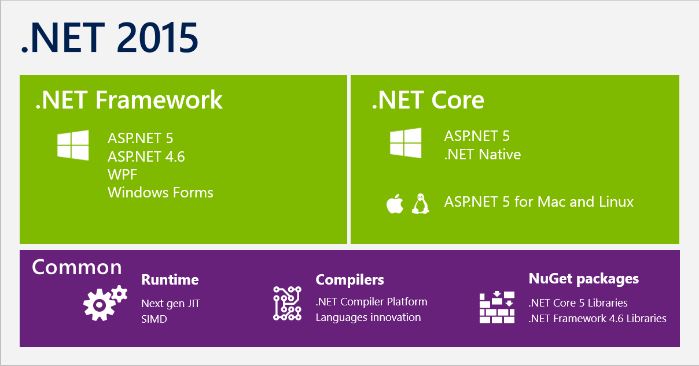
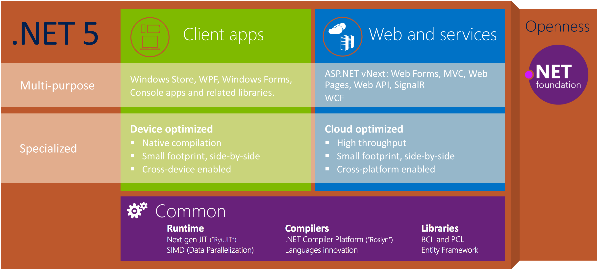
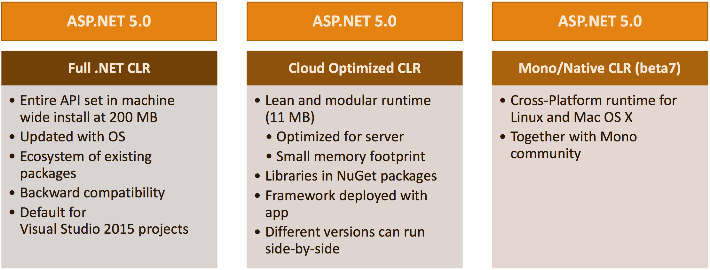
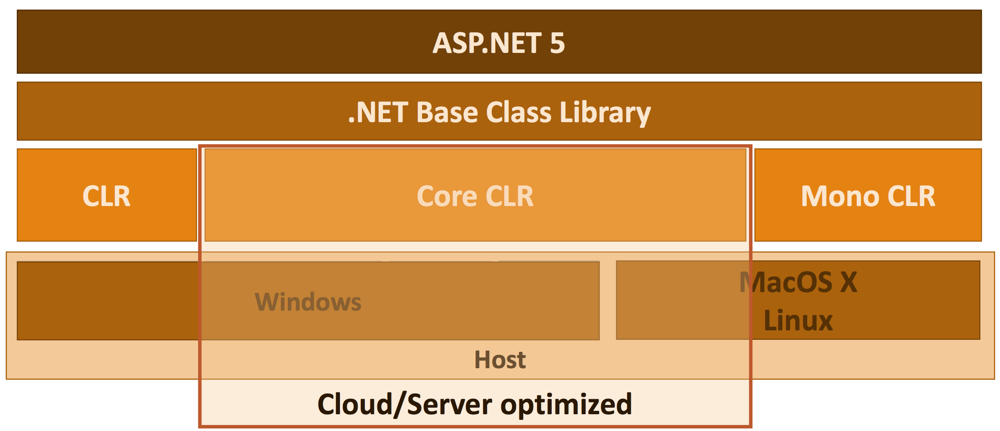
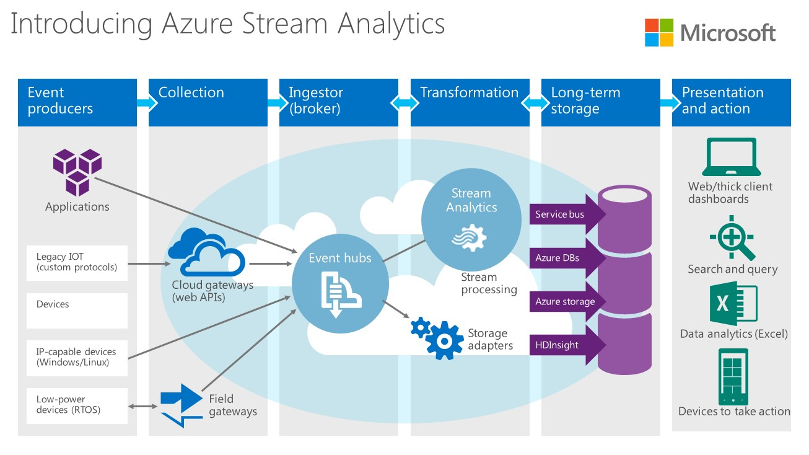
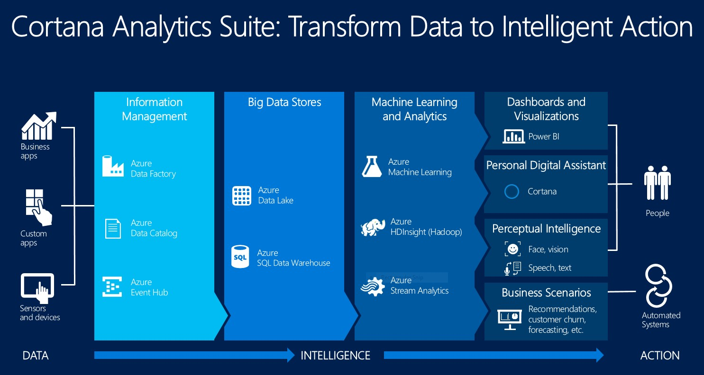

Building Microservices with Microsoft
a presentation by Jeroen Berndsen
Topics
- .NET and ASP.NET 5
- Introduction to Microsoft Azure
- Presenting Azure Service Fabric
The .NET Framework
- Single framework, introduced in 2002
- Quickly followed by .NET Compact Framework
- And again by Silverlight, Windows phone, Windows store, ...
A set of verticals

A set of verticals
- Specialized features that are highly optimized for your vertical
- Verticals were owned and maintained by different teams
- Targetting multiple verticals required multiple projects and linked files
Portable Class Libraries (PCL)
- Unifies verticals based on API shape (Contracts)
- Enables creation of libraries that run on different verticals
- Drives convergence between verticals
- But APIs are only portable when framework implementation is moved forward across all verticals
Framework deployment
- Machine-wide, centralized servicing, reduced disk space, etc.
- Depending on a recently released framework requires machine updates
- Not feasibly for web developers (IT operations says NO)
- Impossible for mobile developers
.NET Core
.NET Core Components
- GC, Core Language Runtime, Just-in-time compiler
- Base Class Libraries (BCL), but without framework dependencies, reduced footprint
- Entirely shipped as a NuGet package
What this means
- Deploys along with your app, no machine dependency
- Side-by-side on the same machine
- Optimized for agile delivery through NuGet
- Open sourced, with support for Windows, Linux and Mac OS X
ASP.NET 5
ASP.NET 5 and the modern web
- Totally modular
- Seamless transition from on-premises to cloud
- Open source with contributions
- Fast
- Faster Development cycle
- Choose your editor and tools
- Cross-platform
ASP.NET on .NET Framework 5
.NET Core technology stack
Microsoft Azure
- Infrastructure as a service, Platform as a service
- Hybrid cloud with Azure Stack
- Pay for what you use, pay-per-minute model
- Currently 22 regions world-wide
Microsoft Azure
Microsoft is currently the only vendor to be positioned as a Leader in Gartner’s Magic Quadrants for Application Platform as a Service, Cloud Infrastructure as a Service, Cloud Storage Services and x86 Server Virtualization.
Microsoft Azure
The first cloud provider recognised by the European Union’s data protection authorities for their commitment to rigorous EU privacy laws. Microsoft was also the first major cloud provider to adopt the new international cloud privacy standard, ISO 27018.
Azure for web and mobile
- App services
- Mobile services
- API management
- Notification hubs
Azure for storage and analytics
- SQL databases
- Managed cache, redis cache, DocumentDB, ...
- HDInsight (Hadoop), Machine Learning, Stream analytics
- Data Lake Store and Analytics
Everything is a microservice
Everything is a microservice
Azure Service Fabric - what it is
- Provides a high control microservices platform
- Battle hardened in production for over five years
- Skype for Business, DocumentDB, Azure SQL server (>1.4m databases), Bing Cortana (>500m evals/sec)
Azure Service Fabric - what it offers
- It supports creating both stateless and stateful services
- Provides the benefits of orchestration and automation for microservices with new levels of app awareness and insight
- Solves hard distributed systems problems like state management and provides application lifecycle management capabilities
Azure Service Fabric - service management
- In the cloud as well as on-premises
- Supports container technology
- Rolling updates, canary releases, health monitoring, auto-scaling, automatic rollback, ...
Azure Service Fabric - stateful services
- Support for stateful microservices
- Assemble stateful microservices into heavy-duty applications such as database back ends
- Service Fabric does the heavy lifting of replication, partitioning, transactional integrity, fault tolerance, high availability, and more
Azure Service Fabric - Multiple programming models and SDK
- Actor programming model (Halo Online)
- SDK currently supports C++ and .NET
- Build and test on one machine, simulate clusters of hundreds of nodes on a single server
- Microsoft announced that Java, Python, PHP and NodeJS support will be added over time
Thank you!
Review this presentation at http://presentations.jberndsen.nl/microservices-with-microsoft/
Reach me at jeroen.berndsen@trivento.nl